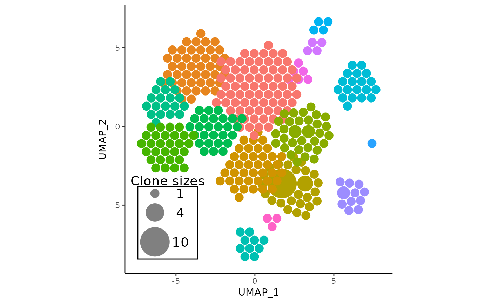
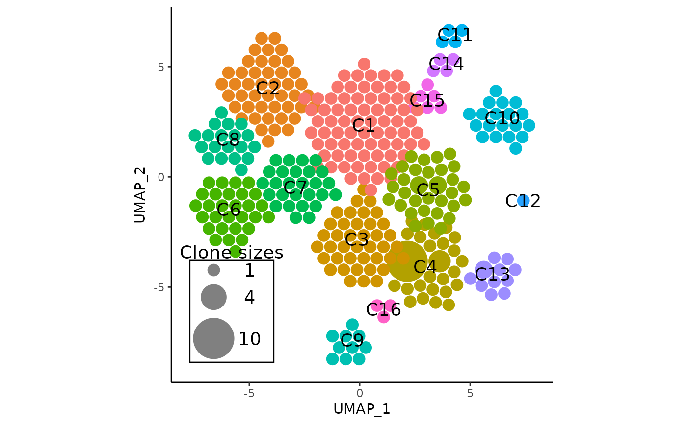

![[Stable]](figures/lifecycle-stable.svg)
This function combines the functionality of both RunAPOTC() and
APOTCPlot(). Given a Seurat object, it first runs the APackOfTheClones
method (RunAPOTC()) to compute clonal expansion information, and then
generates a ggplot2 object of the clonal expansion plot with
a circle size legend. (APOTCPlot())
Usage
vizAPOTC(
seurat_obj,
reduction_base = "umap",
clonecall = "strict",
...,
extra_filter = NULL,
alt_ident = NULL,
clone_scale_factor = "auto",
rad_scale_factor = 0.95,
order_clones = TRUE,
try_place = FALSE,
repulse = TRUE,
repulsion_threshold = 1,
repulsion_strength = 1,
max_repulsion_iter = 20L,
show_shared = NULL,
only_link = NULL,
clone_link_width = "auto",
clone_link_color = "black",
clone_link_alpha = 0.5,
res = 360L,
linetype = "blank",
use_default_theme = TRUE,
retain_axis_scales = FALSE,
alpha = 1,
show_labels = FALSE,
label_size = 5,
add_size_legend = TRUE,
legend_sizes = "auto",
legend_position = "auto",
legend_buffer = 0.2,
legend_color = "#808080",
legend_spacing = "auto",
legend_label = "Clone sizes",
legend_text_size = 5,
add_legend_background = TRUE,
add_legend_centerspace = 0,
detail = TRUE,
verbose = TRUE
)Arguments
- seurat_obj
A seurat object that has been integrated with clonotype data with
scRepertoire::combineExpression.- reduction_base
character. The seurat reduction to base the clonal expansion plotting on. Defaults to
'umap'but can be any reduction present within the reductions slot of the input seurat object, including custom ones. If `'pca'“, the cluster coordinates will be based on PC1 and PC2. However, generally APackOfTheClones is used for displaying UMAP and occasionally t-SNE versions to intuitively highlight clonal expansion.- clonecall
character. The column name in the seurat object metadata to use. See
scRepertoiredocumentation for more information about this parameter that is central to both packages.- ...
additional "subsetting" keyword arguments indicating the rows corresponding to elements in the seurat object metadata that should be filtered by. E.g.,
seurat_clusters = c(1, 9, 10)will filter the cells to those in theseurat_clusterscolumn with any of the values 1, 9, and 10. Unfortunately, column names in the seurat object metadata cannot conflict with the keyword arguments. MAJOR NOTE if any subsetting keyword arguments are a prefix of any preceding argument names (e.g. a column namedreductionis a prefix of thereduction_baseargument) R will interpret it as the same argument unless both arguments are named. Additionally, this means any subsequent arguments must be named.- extra_filter
character. An additional string that should be formatted exactly like a statement one would pass into dplyr::filter that does additional filtering to cells in the seurat object - on top of the other keyword arguments - based on the metadata. This means that it will be logically AND'ed with any keyword argument filters. This is a more flexible alternative / addition to the filtering keyword arguments. For example, if one wanted to filter by the length of the amino acid sequence of TCRs, one could pass in something like
extra_filter = "nchar(CTaa) - 1 > 10". When involving characters, ensure to enclose with single quotes.- alt_ident
character. By default, cluster identity is assumed to be whatever is in
Idents(seurat_obj), and clones will be grouped by the active ident. However,alt_identcould be set as the name of some column in the meta data of the seurat object to be grouped by. This column is meant to have been a product ofSeurat::StashIdentor manually added.- clone_scale_factor
Dictates how much to scale each circle(between 0,1) radius when converting from clonotype counts into circles that represent individual clonotypes. The argument defaults to the character
"auto", and if so, the most visually pleasing factor will be estimated.- rad_scale_factor
numeric between 0 and 1. This value decreases the radius of the smallest clones by this scale factor. And the absolute value of this decrease will be applied to all packed circles, effectively shrinking all circles on the spot, and introduce more constant spacing in between.
- order_clones
logical. Decides if the largest clone circles should be near cluster centroids. This is highly recommended to be set to TRUE for increased intuitiveness of the visualization, as resulting plots tend to give an improved impression of the proportion of expanded clones. If
FALSE,will randomly scramble the positions of each circle. For the sake of being replicable, a random seed is recommended to be set with set.seed.- try_place
If
TRUE, always minimizes distance from a newly placed circle to the origin in the circle packing algorithm.- repulse
If
TRUE, will attempt to push overlapping clusters away from each other.- repulsion_threshold
numeric. The radius that clonal circle clusters overlap is acceptable when repulsing.
- repulsion_strength
numeric. The smaller the value the less the clusters repulse each other per iteration, and vice versa.
- max_repulsion_iter
integer. The number of repulsion iterations.
The output of getSharedClones can be inputted here, and the resulting plot will overlay lines between clone circles if that clonotype is common between clusters. Note that the input must be generated from data in the correct
APackOfTheClonesrun, and the behavior is undefined otherwise and will likely error. The next 4 arguments allow for aesthetic customization of these line links.- only_link
Optional integer indicating to only display clone links originating from this cluster if showing shared clones.
- clone_link_width
numeric. The width of the lines that connect shared clones. Defaults to
"auto"which will estimate a reasonable value depending on circle sizes.- clone_link_color
character. The color of the lines that connect shared clones. Defaults to
"blend"which will use the average colors of the two connected clones. Else, any hex color or valid color string input will work, and the corresponding color will be applied on all links.- clone_link_alpha
numeric. The alpha of the lines that connect shared clones.
- res
The number of points on the generated path per full circle. From plot viewers, if circles seem slightly too pixelated, it is recommended to first try to export the plot as an
.svgbefore increasingresdue to increased plotting times from ggforce::geom_circle.- linetype
The type of outline each circle should have. defaults to
"blankmeaning no outline. More information is in the function documentation ofggforce::geom_circle.- use_default_theme
logical that defaults to
TRUE. IfTRUE, the resulting plot will have the same theme as the seurat reference reduction plot. Else, the plot will simply have a blank background.- retain_axis_scales
If
TRUE, approximately maintains the axis scales of the original reduction plot. However, it will only attempt to extend the axes and never shorten. Users are recommended to set this toTRUEespecially if working with subsetted versions of the clonal data to better preserve the geometric relation to the original dimensional reduction.- alpha
numeric. The alpha of the circles in (0, 1]. Defaults to 1.
- show_labels
If
TRUE, will label each circle cluster at the centroid, defaulting to "C0, C1, ...".- label_size
The text size of labels if shown. Defaults to 5.
- add_size_legend
If
TRUE, adds a legend to the plot visualizing the relative sizes of clones. Note that it is simply an overlay and not a real ggplot2 legend.- legend_sizes
numeric vector. Indicates the circle sizes to be displayed on the legend, and will always be sorted from smallest to greatest. Defaults to
"auto"which estimate a reasonable range of sizes to display.- legend_position
character or numeric. Can be set to either
"top_left","top_right","bottom_left","bottom_right"and places the legend roughly in the corresponding position. Otherwise, can be a numeric vector of length 2 indicating the x and y position of the topmost (smallest) circle of the legend.- legend_buffer
numeric. Indicates how much to "push" the legend towards the center of the plot from the selected corner. If negative, will push away
- legend_color
character. Indicates the hex color of the circles displayed on the legend. Defaults to the hex code for a gray tone
- legend_spacing
numeric. Indicates the horizontal distance between each stacked circle on the size legend. Defaults to
"auto"which will use an estimated value depending on plot size- legend_label
character. The title of the legend, which defaults to
"clone sizes.- legend_text_size
numeric. The text size of the letters and numbers on the legend
- add_legend_background
logical. If
TRUE, will add a border around the legend and fill the background to be white, overlaying anything else.- add_legend_centerspace
numeric. An additional amount of distance changed between the circle sizes on the left side of the legend and the numbers on the right. Useful to set to around 0.5 (or more / less) when there are particularly large clone sizes that may cover the numbers.
- detail
logical. If
FALSE, will only plot entire clusters as one large circle, which may be useful in cases where there are a high number of clones resulting in a large number of circles on the resulting ggplot, which has increased plotting times, and certain aspects of the plot needs to be finely adjusted with AdjustAPOTC or simply inspected. This should not be set toFALSEfor the actual clonal expansion plot.- verbose
logical. Decides if visual cues are displayed to the R console of the progress.
Value
A ggplot object of the APackOfTheClones clonal expansion plot of the
seurat object. There is an additional 10th element in the object named
"APackOfTheClones" used by other functions in this package and shouldn't
interfere with any other ggplot functionality. (As far as currently known)
Details
Note that the subsetting arguments ... and extra_filter are only a
quick convenience to subset based on metadata, and the subset S3 method
defined in Seurat is much more mature are has more features. Additionally,
users need to work with data subsets are recommended to and likely already
are working with seurat objects subsetted/split with Seurat::SplitObject.
Cluster labelling
For the ident that was used to cluster the clones, labels for each cluster
are inferred and stored in the run so that they can be used by other
functions and optionally overlaid on the plot over clusters. If the levels
of the ident used is a naturally ordered integer sequence, then the labels
generated would be "C1", "C2", "C3" ... , else they would be the actual
ident levels themselves.
Examples
data("combined_pbmc")
# plot with default parameters
vizAPOTC(combined_pbmc, verbose = FALSE)

# use arguments from RunAPOTC and APOTCPlot
vizAPOTC(
combined_pbmc, try_place = TRUE, show_labels = TRUE, verbose = FALSE
)
